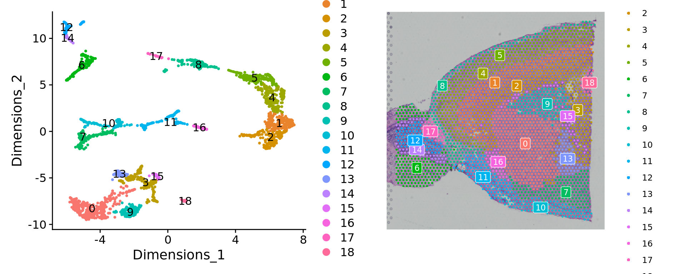

Last updated: 2024-07-18
Checks: 7 0
Knit directory: KODAMA-Analysis/
This reproducible R Markdown analysis was created with workflowr (version 1.7.1). The Checks tab describes the reproducibility checks that were applied when the results were created. The Past versions tab lists the development history.
Great! Since the R Markdown file has been committed to the Git repository, you know the exact version of the code that produced these results.
Great job! The global environment was empty. Objects defined in the global environment can affect the analysis in your R Markdown file in unknown ways. For reproduciblity it’s best to always run the code in an empty environment.
The command set.seed(20240618) was run prior to running
the code in the R Markdown file. Setting a seed ensures that any results
that rely on randomness, e.g. subsampling or permutations, are
reproducible.
Great job! Recording the operating system, R version, and package versions is critical for reproducibility.
Nice! There were no cached chunks for this analysis, so you can be confident that you successfully produced the results during this run.
Great job! Using relative paths to the files within your workflowr project makes it easier to run your code on other machines.
Great! You are using Git for version control. Tracking code development and connecting the code version to the results is critical for reproducibility.
The results in this page were generated with repository version e12fa75. See the Past versions tab to see a history of the changes made to the R Markdown and HTML files.
Note that you need to be careful to ensure that all relevant files for
the analysis have been committed to Git prior to generating the results
(you can use wflow_publish or
wflow_git_commit). workflowr only checks the R Markdown
file, but you know if there are other scripts or data files that it
depends on. Below is the status of the Git repository when the results
were generated:
Ignored files:
Ignored: .Rhistory
Ignored: .Rproj.user/
Untracked files:
Untracked: .gitignore
Unstaged changes:
Deleted: analysis/figure/DLPFC-12.Rmd/unnamed-chunk-10-1.png
Note that any generated files, e.g. HTML, png, CSS, etc., are not included in this status report because it is ok for generated content to have uncommitted changes.
These are the previous versions of the repository in which changes were
made to the R Markdown (analysis/Seurat.Rmd) and HTML
(docs/Seurat.html) files. If you’ve configured a remote Git
repository (see ?wflow_git_remote), click on the hyperlinks
in the table below to view the files as they were in that past version.
| File | Version | Author | Date | Message |
|---|---|---|---|---|
| Rmd | e12fa75 | Stefano Cacciatore | 2024-07-18 | Start my new project |
| html | 0173986 | Stefano Cacciatore | 2024-07-17 | Build site. |
| Rmd | d437809 | Stefano Cacciatore | 2024-07-17 | Start my new project |
| html | a838967 | Stefano Cacciatore | 2024-07-17 | Build site. |
| html | 5182c30 | Stefano Cacciatore | 2024-07-17 | Build site. |
| Rmd | 5e8d2ca | Stefano Cacciatore | 2024-07-17 | Start my new project |
| Rmd | 30960c1 | GitHub | 2024-07-17 | Update Seurat.Rmd |
| Rmd | 210dfdd | GitHub | 2024-07-16 | Update Seurat.Rmd |
| html | 7be8f59 | tkcaccia | 2024-07-15 | updates |
| Rmd | f8ca54a | tkcaccia | 2024-07-14 | update |
| html | f8ca54a | tkcaccia | 2024-07-14 | update |
| Rmd | 89a11c1 | GitHub | 2024-07-08 | Add files via upload |
| html | 2b5aad7 | GitHub | 2024-07-08 | Add files via upload |
Seurat is an R toolkit widely used for single-cell genomics and spatial transcriptomics, developed and maintained by the Satija Lab at New York Genome Center. In this section, we will see the steps to integrate KODAMA into the Seurat pipeline.
First, we need to load the required libraries for this analysis. Make sure you have the following packages installed.
library(Seurat)
library(SeuratData)
library(KODAMA)
library(KODAMAextra)The data used are sagittal sections of the mouse brain generated using Visium v1 technology saved in the Seurat library. For specific details on loading and using the dataset, please take a look at the documentation by typing ?stxBrain in your R environment. Install and load the anterior region of the mouse brain dataset.
InstallData("stxBrain")
brain <- LoadData("stxBrain", type = "anterior1")We will preprocess the data using Seurat’s SCTransform method and perform PCA:
brain <- SCTransform(brain, assay = "Spatial", verbose = FALSE)
brain <- RunPCA(brain, assay = "SCT", verbose = FALSE)Apply KODAMA to reduce dimensionality and visualize the results:
brain <- RunKODAMAmatrix(brain, reduction = "pca")socket cluster with 1 nodes on host 'localhost'
================================================================================[1] "Finished parallel computation"
[1] "Calculation of dissimilarity matrix..."
================================================================================brain <- RunKODAMAvisualization(brain, method = "UMAP")Apply clustering on the KODAMA plot.
brain <- FindNeighbors(brain, reduction = "KODAMA", dims = 1:2)
brain <- FindClusters(brain, verbose = FALSE, graph.name="RNA_snn",resolution = 0.2)Visualize the KODAMA results with DimPlot and SpatialDimPlot:
p1 <- DimPlot(brain, reduction = "KODAMA", label = TRUE)
p2 <- SpatialDimPlot(brain, label = TRUE, label.size = 3)
p1 + p2
| Version | Author | Date |
|---|---|---|
| 0173986 | Stefano Cacciatore | 2024-07-17 |
sessionInfo()R version 4.3.3 (2024-02-29 ucrt)
Platform: x86_64-w64-mingw32/x64 (64-bit)
Running under: Windows 10 x64 (build 19045)
Matrix products: default
locale:
[1] LC_COLLATE=English_United States.utf8
[2] LC_CTYPE=English_United States.utf8
[3] LC_MONETARY=English_United States.utf8
[4] LC_NUMERIC=C
[5] LC_TIME=English_United States.utf8
time zone: Africa/Johannesburg
tzcode source: internal
attached base packages:
[1] parallel stats graphics grDevices utils datasets methods
[8] base
other attached packages:
[1] KODAMAextra_1.0 e1071_1.7-14
[3] doParallel_1.0.17 iterators_1.0.14
[5] foreach_1.5.2 KODAMA_3.1
[7] umap_0.2.10.0 Rtsne_0.17
[9] minerva_1.5.10 stxBrain.SeuratData_0.1.2
[11] SeuratData_0.2.2.9001 Seurat_5.1.0
[13] SeuratObject_5.0.2 sp_2.1-4
loaded via a namespace (and not attached):
[1] RcppAnnoy_0.0.22 splines_4.3.3
[3] later_1.3.2 bitops_1.0-7
[5] tibble_3.2.1 polyclip_1.10-6
[7] fastDummies_1.7.3 lifecycle_1.0.4
[9] rprojroot_2.0.4 globals_0.16.3
[11] lattice_0.22-6 MASS_7.3-60.0.1
[13] magrittr_2.0.3 plotly_4.10.4
[15] sass_0.4.9 rmarkdown_2.27
[17] jquerylib_0.1.4 yaml_2.3.8
[19] httpuv_1.6.15 glmGamPoi_1.14.3
[21] sctransform_0.4.1 spam_2.10-0
[23] askpass_1.2.0 spatstat.sparse_3.1-0
[25] reticulate_1.38.0 cowplot_1.1.3
[27] pbapply_1.7-2 RColorBrewer_1.1-3
[29] abind_1.4-5 zlibbioc_1.48.2
[31] GenomicRanges_1.54.1 purrr_1.0.2
[33] BiocGenerics_0.48.1 RCurl_1.98-1.14
[35] rappdirs_0.3.3 git2r_0.33.0
[37] GenomeInfoDbData_1.2.11 IRanges_2.36.0
[39] S4Vectors_0.40.2 ggrepel_0.9.5
[41] irlba_2.3.5.1 listenv_0.9.1
[43] spatstat.utils_3.0-5 goftest_1.2-3
[45] RSpectra_0.16-1 spatstat.random_3.2-3
[47] fitdistrplus_1.2-1 parallelly_1.37.1
[49] DelayedMatrixStats_1.24.0 leiden_0.4.3.1
[51] codetools_0.2-20 DelayedArray_0.28.0
[53] tidyselect_1.2.1 farver_2.1.2
[55] matrixStats_1.3.0 stats4_4.3.3
[57] spatstat.explore_3.2-7 jsonlite_1.8.8
[59] progressr_0.14.0 ggridges_0.5.6
[61] survival_3.7-0 tools_4.3.3
[63] snow_0.4-4 ica_1.0-3
[65] Rcpp_1.0.12 glue_1.7.0
[67] gridExtra_2.3 SparseArray_1.2.4
[69] xfun_0.45 MatrixGenerics_1.14.0
[71] GenomeInfoDb_1.38.8 dplyr_1.1.4
[73] withr_3.0.0 fastmap_1.2.0
[75] fansi_1.0.6 openssl_2.2.0
[77] digest_0.6.36 R6_2.5.1
[79] mime_0.12 colorspace_2.1-0
[81] scattermore_1.2 tensor_1.5
[83] spatstat.data_3.1-2 utf8_1.2.4
[85] tidyr_1.3.1 generics_0.1.3
[87] data.table_1.15.4 class_7.3-22
[89] httr_1.4.7 htmlwidgets_1.6.4
[91] S4Arrays_1.2.1 whisker_0.4.1
[93] uwot_0.2.2 pkgconfig_2.0.3
[95] gtable_0.3.5 workflowr_1.7.1
[97] lmtest_0.9-40 XVector_0.42.0
[99] htmltools_0.5.8.1 dotCall64_1.1-1
[101] scales_1.3.0 Biobase_2.62.0
[103] png_0.1-8 doSNOW_1.0.20
[105] knitr_1.48 rstudioapi_0.16.0
[107] reshape2_1.4.4 nlme_3.1-165
[109] proxy_0.4-27 cachem_1.1.0
[111] zoo_1.8-12 stringr_1.5.1
[113] KernSmooth_2.23-24 miniUI_0.1.1.1
[115] pillar_1.9.0 grid_4.3.3
[117] vctrs_0.6.5 RANN_2.6.1
[119] promises_1.3.0 xtable_1.8-4
[121] cluster_2.1.6 evaluate_0.24.0
[123] cli_3.6.2 compiler_4.3.3
[125] rlang_1.1.4 crayon_1.5.3
[127] future.apply_1.11.2 labeling_0.4.3
[129] plyr_1.8.9 fs_1.6.4
[131] stringi_1.8.4 viridisLite_0.4.2
[133] deldir_2.0-4 munsell_0.5.1
[135] lazyeval_0.2.2 spatstat.geom_3.2-9
[137] Matrix_1.6-5 RcppHNSW_0.6.0
[139] patchwork_1.2.0 sparseMatrixStats_1.14.0
[141] future_1.33.2 ggplot2_3.5.1
[143] shiny_1.8.1.1 highr_0.11
[145] SummarizedExperiment_1.32.0 ROCR_1.0-11
[147] igraph_2.0.3 bslib_0.7.0